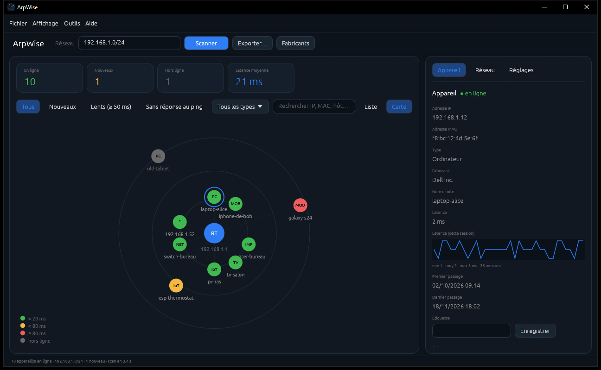
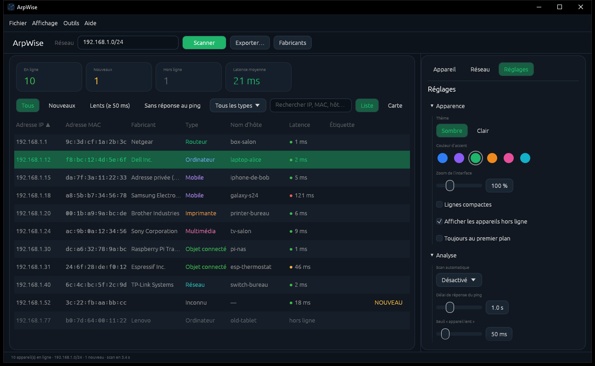
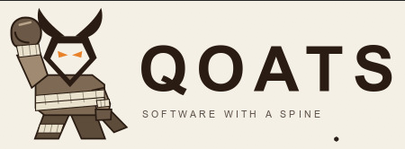
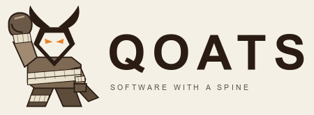

See everything on your network, in one click.
ArpWise is a fast, driver-free network scanner for Windows and Linux. It lists every device on your network, tells you who made it and how fast it answers, and warns you when something new shows up.

Built to be simple and quick
Written in Rust. One small executable. Nothing to install first.
Nothing else to install
No Npcap, no Wireshark. ArpWise uses the native ARP API on Windows and the kernel neighbour table on Linux.
Know who is there
IP, MAC address, hostname, manufacturer and a guess of the device type: router, phone, printer, TV, IoT…
Spot newcomers
ArpWise remembers what it has seen. New devices are flagged, and known ones that left stay in the list as offline.
A full scan in seconds
A whole /24 network is scanned in a few seconds, with the latency of every device measured in parallel.
See your network
A radar-style map puts the router in the middle and every device around it, coloured by how fast it answers.
Act on a device
Ping, traceroute, port scan, open in browser, copy, and wake a machine with Wake-on-LAN — from a right-click.
Make it yours
Dark or light, six accent colours, zoom, compact rows, columns you choose, automatic rescans and more.
CSV, JSON, command line
Export the list, or script everything with the arpwise command in your terminal.
Screenshots
Shown with made-up devices.




Download
Pick your system on the latest release.
| System | 64-bit | 32-bit | ARM64 |
|---|---|---|---|
| Windows | .msi .zip | .msi .zip | .msi .zip |
| Linux Debian, Ubuntu… | .deb | .deb | .deb |
| Linux Fedora, openSUSE… | .rpm | .rpm | .rpm |
The Windows installer adds a Start menu shortcut and the arpwise command to your PATH.
Command line
Everything the app does can be scripted.
# scan the detected local network arpwise # scan a specific network, add latency, export to a file arpwise --network 192.168.1.0/24 --ping --output devices.csv # download the manufacturer database (once) arpwise --update-vendors # scan some ports on a host you own, wake a machine arpwise ports 192.168.1.10 --range 22,80,8000-8100 arpwise wake aa:bb:cc:dd:ee:ff

ArpWise is made by Qoats — software with a spine. Free and open source under the GPL-3.0 license.
Questions? support@axim.ch